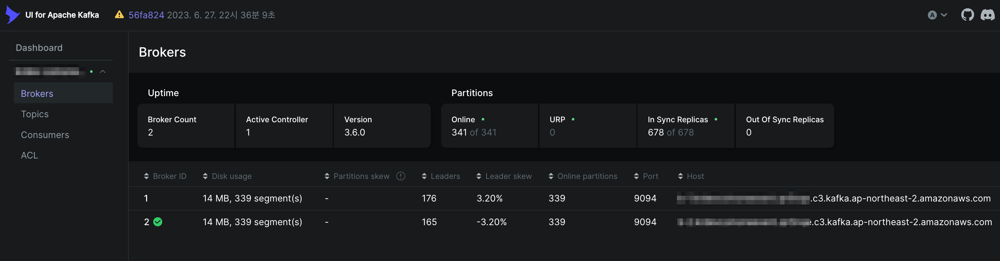

Kafka
개요
AWS의 관리형 Kafka 서비스인 MSK 클러스터 운영자를 위한 가이드
환경
온프레미스 Kafka Cluster가 아닌 Managed Kafka 클러스터인 MSK를 기준으로 설명합니다.
가이드
클러스터 업그레이드
Amazon MSK 버전 업그레이드와 클러스터 설정 업데이트 기능은 Kafka 모범 사례를 기반으로 하며 클러스터 IO에 Kafka를 계속 사용할 수 있도록 하는 롤링 업데이트 프로세스를 사용합니다. 따라서 설정 파일이 업데이트 되거나 Kafka 버전 업그레이드가 진행되더라도 영향도는 Kafka Client가 받는 영향도는 없습니다. (물론 이 또한 고가용성 설정이나 모범사례에 기반한 설정이 적용되어 있어야 합니다.)
자세한 사항은 Best practices for version upgrades 페이지를 참고합니다.
브로커 타입
브로커 타입별로 권장 파티션 수가 지정되어 있습니다. 이를 넘을 경우 MSK 클러스터의 버전 업그레이드를 실패하므로 주의하도록 합니다.
예를 들어 t3.small은 브로커당 권장 파티션 수가 300입니다. 각 브로커가 Online Partition으로 330개를 사용하고 있을 경우, 해당 클러스터의 Kafka 버전 업그레이드에 실패합니다.
- 관련문서 : MSK 모범사례
MSK 클러스터의 브로커 당 파티션 개수를 모니터링하는 방법은 Kafka UI를 설치하여 MSK Cluster 정보를 수집하거나, Prometheus + Grafana 등을 통해 수집한 메트릭을 통해서 확인할 수 있습니다.
아래는 Kafka UI에서 확인한 브로커 상태 정보입니다.

고가용성 설정
- 복제 인수(RFReplication Factor)가
3이상인지 확인합니다. RF가1이면 롤링 업데이트 중에 오프라인 파티션이 발생할 수 있고 RF 값이2이면 패치 중에 오프라인 파티션이 발생할 수 있습니다. 브로커 수가2개라면 RF를2로 두는 걸 권장드립니다.default.replication.factor: RFReplication Factor. 이 값은 토픽의 파티션을 몇 개의 브로커에 복제할지를 결정하는 설정입니다. 높은 복제 계수는 브로커 장애가 발생해도 데이터가 유실되지 않도록 보호하는 데 도움을 줍니다.
- 최소 동기화 복제본(minISR)을 최대 RF - 1로 설정합니다. RF와 동일한 minISR은 롤링 업데이트 중에 클러스터 생성을 방해할 수 있습니다. 2개의 minISR을 사용하면 하나의 복제본이 오프라인 상태일 때 3방향 복제된 항목이 가능합니다.
min.insync.replicas: ISRIn-Sync Replication. 이 값은 쓰기 요청이 성공하기 위해 동기화되어야 하는 최소 리플리카 수를 지정합니다. 이 설정은 데이터의 내구성을 높이고, 쓰기 작업의 데이터 일관성을 보장하는 데 중요합니다.
브로커 3개 구성인 경우 RF, ISR 설정 예시
default.replication.factor = 3
min.insync.replicas = 2
replica.lag.time.max.ms = 30000
브로커 2개 구성인 경우 RF, ISR 설정 예시
default.replication.factor = 2
min.insync.replicas = 1
replica.lag.time.max.ms = 30000
계층형 스토리지
계층형 스토리지는 사용자가 자주 접근하지 않는 데이터를 자동으로 더 저렴한 스토리지 계층으로 이동시키는 기능을 말합니다. Kafka의 주요 사용 사례 중 하나는 대량의 로그 또는 이벤트 데이터를 저장하고, 이를 실시간으로 분석하는 것입니다. 이러한 데이터 중 일부는 생성 후 단기간에 많이 사용되지만, 시간이 지남에 따라 접근 빈도가 줄어들 수 있습니다.
MSK의 계층형 스토리지 기능을 사용하면, 이러한 Cold 데이터를 자동으로 더 저렴한 스토리지로 이동시켜 비용을 절감할 수 있습니다. 예를 들어, 초기에는 SSD와 같은 고성능 스토리지에 데이터를 저장했다가, 일정 기간이 지나면 자동으로 HDD 같은 저비용 스토리지로 옮겨지게 됩니다. 이는 특히 데이터를 장기간 보관해야 하는 경우 비용 효율적입니다.
이 기능은 비용을 절감하면서도, 필요할 때 빠른 접근이 가능하도록 유지하기 위해 중요합니다. 사용자는 데이터의 저장 위치나 성능에 대해 걱정하지 않고, MSK 서비스가 자동으로 관리해주는 편리함을 누릴 수 있습니다.
계층형 스토리지Tiered storage의 사용 조건
- 계층형 스토리지가 활성화된 Amazon MSK 클러스터는 버전 3.6.0 또는 2.8.2.tiered를 사용해야 합니다.
- 계층형 스토리지는 브로커 유형 t3.small을 지원하지 않습니다.
MSK 클러스터에서 위 2개 조건이 충족되면 계층형 스토리지Tiered Storage 기능을 사용할 수 있습니다.
테라폼 MSK 모듈에서 Tiered Storage 기능을 활성화하려면 storage_mode 값을 LOCAL(default)이 아닌 TIERED로 변경합니다.
#-------------------------
# MSK Cluster
#-------------------------
module "msk_cluster" {
...
name = local.name
kafka_version = "3.6.0"
number_of_broker_nodes = 3
broker_node_az_distribution = "DEFAULT"
# Valid values: `null`, `PER_TOPIC_PER_PARTITION`, `PER_BROKER`, `PER_TOPIC_PER_BROKER`
# https://docs.aws.amazon.com/msk/latest/developerguide/metrics-details.html
enhanced_monitoring = "PER_TOPIC_PER_PARTITION"
broker_node_storage_info = {
ebs_storage_info = {
volume_size = 500
}
}
# Broker node's storage autoscaling
storage_mode = "TIERED"